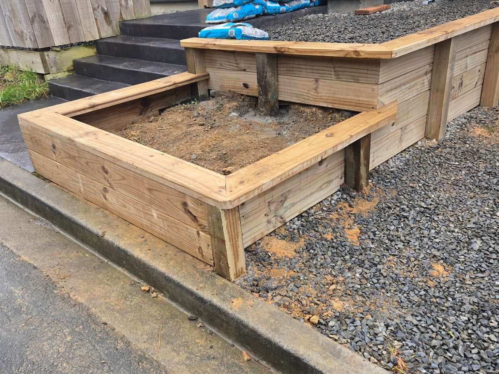
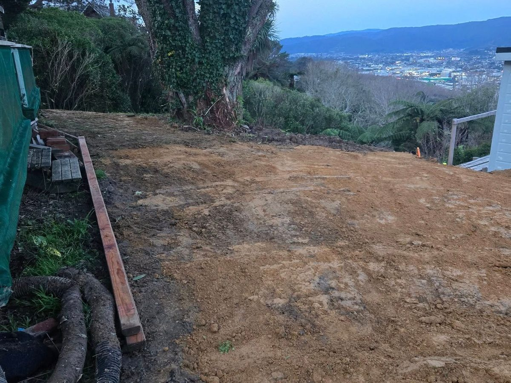

Hard landscaping
The bones of the garden, built to last.
Hard landscaping is what we do best. Get the levels, drainage and structures right and the soft stuff has a chance to thrive.
Paving & patiosConcrete and paved outdoor areas with the right falls, so water runs away from the house.
EdgingConcrete and timber edging that keeps lawn, gravel and garden beds where they belong.
StepsConcrete or timber steps that make a sloping section easy and safe to get around.
RetainingTimber, block and concrete walls to terrace a slope and win back flat ground. More on retaining.
Soft landscaping
Then the green bits.
- Lawns. Ground levelled, topsoiled and prepared, then sown or laid, so you get a flat lawn that drains.
- Garden beds. Built up, edged, filled with good soil and mulched, ready for planting.
- Planting. Hedges, shrubs and natives planted to your plan or your designer's, or kept simple with hardy plants that handle the wind.
Section make-overs & clear-outs
Bought a place with a jungle out the back?
We'll clear it, regrade it and rebuild it. Because we own the digger and the trucks, the clear-out and the build are the same job.
- Clear-outs. Scrub, stumps, old sheds, broken concrete and rubbish removed and carted.
- Earthworks. Ground regraded, banks cut back or retained, drainage put in where the water sits.
- The build. Paths, patios, walls, steps, lawns and beds, finished in one programme.
- One price. Each stage is a line on the quote, so you can do it all at once or in stages.
How it runs
From overgrown to finished.
Walk the section
Adam walks it with you, talks through what you want and checks levels, drainage and access.
Clear & dig
Our digger clears and shapes the ground, and our trucks cart away what has to go.
Build the hard stuff
Walls, steps, edging, paths and paving go in first, with drainage sorted.
Lawn, beds & tidy
Topsoil, lawn and planting, then a clean-up and final walk-through.
Recent landscaping
Sections we've transformed lately.
 Photo · Paved courtyard
Photo · Paved courtyard
Photo · Lawn & garden beds
Photo · Section make-over